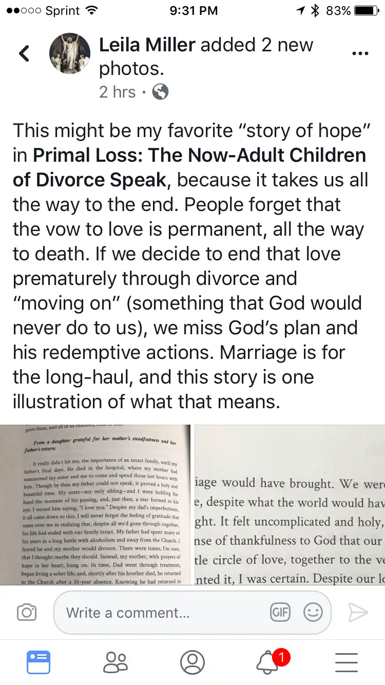
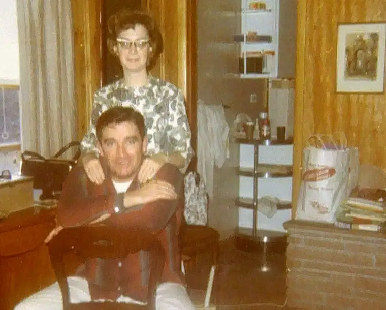
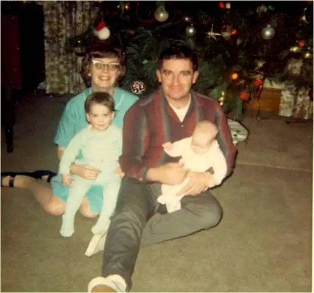
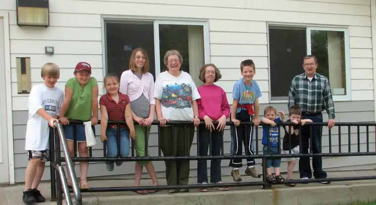

Reading the Facebook post, a flurry of emotions rushed in as I recognized something familiar — something personal — being discussed. My own words appeared before me — ones I’d forgotten I’d written.
I’d been following details of Leila Miller’s project — how it had come to be, what it entailed — since before the finished product, her book, “Primal Loss: The Now-Adult Children of Divorce Speak,” was published.

And now, I was reading comments about a certain passage she’d claimed as her favorite from the book in a back section revealing stories of hope.

A friend had connected us initially, seeing that we were on a parallel stream of consciousness in many areas. Both of us Catholic mothers who’d borne many children, had come back more fully to the faith after a time of wandering, who feel strongly about the value of Catholic thought on everything, including Christian marriage as a major transforming agent of society, we were connected through faith, values, age and conviction.
After reading excerpts of some of the anonymous submissions from real adult children of divorce her book would highlight, I was drawn into her work. Though I’m not a child of divorce, I could have been. There were times in my late teen years when I wondered whether my parents should be together. My father’s alcoholism was at a peak and it didn’t seem fair to my mother, a daughter of a recovered alcoholic herself, even though deep down I was scared to death of what this could mean for my own life.
And then came my own marriage, and its share of hardships. I began to see things from a different vantage point. As we slowly and painfully worked through our own difficulties, I started to understand my mother — and my father — and why they’d responded as they had, and clung to their sacrament of marriage. And I came to believe not only what it means to endure through hardship, by God’s grace, but the beautiful payoff that can come in doing so.
So, even as Leila was still pulling together the pieces of this powerful book, I felt inspired to send her a note about how much her work meant to me already, and offer a little of what our family had gone through, and how grateful I was to have experienced, through it all, an intact nuclear family at the time of my father’s death. My story seemed to affirm somehow what she was trying to illuminate through her compilation.
It was meant to be only a private note of encouragement, but Leila replied, asking if she could share it in a section in the back of her book. I said sure, refined it a bit, and all but forgot about it.
Meantime, I’ve followed the success of the book, and seen how important it’s become to many. I’ve recommended it those who need healing. I’ve written blog posts mentioning it as a way to offer hope. But my own small part in it was hidden away, or so I thought.
Until the other day, when I recognized my words, my story, in Leila’s post. “This might be my favorite story of hope in ‘Primal Loss: The Now-Adult Children of Divorce Speak,’ because it takes us all the way to the end. People forget that the vow to love is permanent, all the way to death,” Leila wrote. “If we decide to end that love prematurely through divorce and “moving on” (something God would never do to us), we miss God’s plan and his redemptive actions. Marriage is for the long haul, and this story is one illustration of what that means.”
Reading the comments, I was filled with gratitude in seeing others’ reactions to my small portion.
“I fought tears reading this,” one wrote. “Heroism.”
Another said, “This was my favorite story from that chapter, too!”
Still another remarked, “I want to share this with everyone…there is always hope.”
Still stunned, I hesitated, then, after taking a few breaths, I decided to come out from behind the shadows of anonymity.
“Okay. I’m going to fess up here. That is my story. Thank you Leila for posting this. It brought so much joy to my heart knowing how others are affected. And it’s inspired me to share these comments with my Mom, who modeled what living the cross in love entails,” I wrote. “We don’t always get to see the fruits of sharing our stories. But tonight I am getting that chance. And it came on a night I really needed the reminder myself.”
Leila admitted she hadn’t remembered who’d written it, since all the stories of anonymity had blurred together. And I’d never expected, or wanted, to be known for this small piece. But now, it seemed right to quietly show up to the conversation. I realized that perhaps my witness could help someone in some small way.
I’ll post the excerpt, taken from pages 298 and 299 of “Primal Loss,” below. But before I do, I want to emphasize that though the title of this book might create an immediate wall with some, I encourage those curious to find it, and read it. Leila’s book, and the stories within, are really about taking an honest look at the damage of divorce, not to heap on an abundance of shame and regret, but to look forward in hope; to shine a light on the future, not the past.
Sometimes, in order to move forward and heal, we need to go back and review what went wrong, and what we’d do differently. If we keep these wounds hidden, we’ll never be able to advance. As painful as the stories are, they are also helpful, illuminating, convicting. They are ultimately about humility, healing, and embracing the promises Christ offers us from the cross.
I’m glad my piece came at the end, as an offering of hope. I’ll start with it here, and maybe it can be an entry point for you into Leila’s book. As one person who commented after reading my portion said, “There’s always hope.” I haven’t felt that in all moments of my marriage and life, but in all moments, it’s a good reminder of God’s abundant grace that awaits us if we seek it.
Peace and healing be with you.
“It really didn’t hit me, the importance of an intact family, until my father’s final days. He died in the hospital, where my mother had summoned my sister and I to come and spend those last hours with him. Though by then, my father could not speak, it proved a holy and beautiful time. My sister – my only sibling – and I were holding his hand the moment of his passing, and just then, a tear formed in his eye. I sensed him saying, “I love you.” Despite my Dad’s imperfections, it all came down to this. I will never forget the feeling of gratitude that came over me in realizing, despite all we’d gone through together, his life had ended with our family intact. My father had spent many of his years battling the disease of alcoholism, and so many times, I feared he and my mother would divorce. There were times, I’m sure, that I even thought maybe they should. Instead, my mother, with prayers of hope in her heart, hung on, and in time, Dad went through treatment, began living a sober life, and shortly after his brother died, he returned to the Church after a 35-year absence. Following Dad’s death, I was overcome with gratitude that he had died in God’s gentle and merciful embrace. But there was something else, too. I felt such a closeness with my family. Everything was so beautiful about being together, just the four of us in that little room, no complications from additional family members that divorce and possible remarriage would have brought. We were intact, and as whole as we could be, despite what the world would have dictated, and it felt good. It felt right. It felt uncomplicated and holy, and there was an overwhelming sense of thankfulness to God that our original family was there in that little circle of love, together to the very end. It was the way God had wanted it, I was certain. Despite our loss, we were at peace.”
 Engagement photo of Robert Beauclair and Jane Byrne, 1965.[/caption]
Engagement photo of Robert Beauclair and Jane Byrne, 1965.[/caption]




